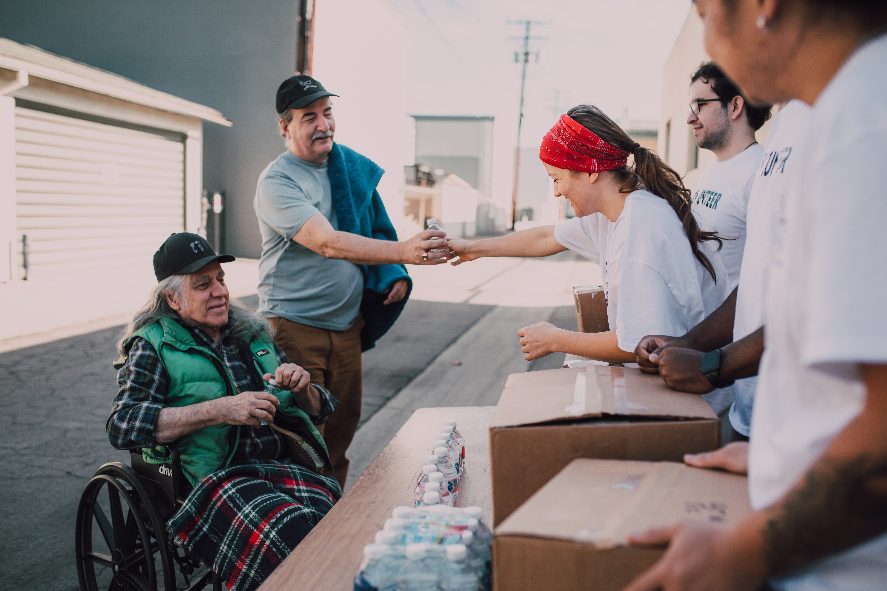
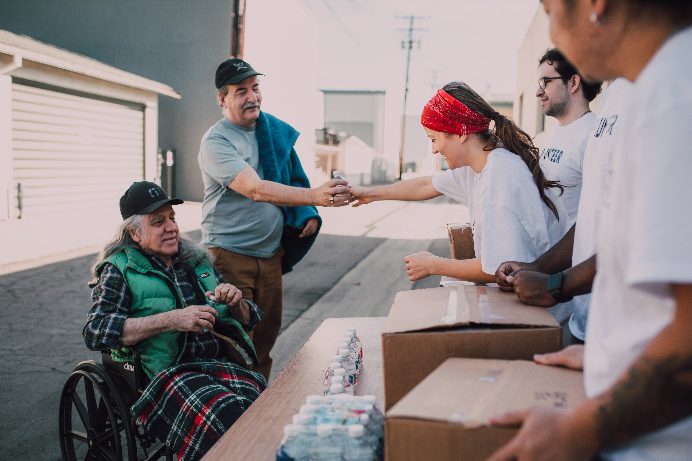

Donations of time, money and supplies are instrumental to the success of the IU Student Outreach Clinic. With your help, local health care professionals and trainees can continue to provide free health services to the individuals who need it most. Support of this project also helps IU School of Medicine create a new generation of physicians with a personal commitment to the well-being of the Indianapolis community.
From medical equipment to office supplies, the IU Student Outreach Clinic is always in need of various items. However, the clinic cannot accept expired items, sharps or needles, or advanced equipment beyond the scope of an outpatient care clinic such as bladder catheters, endotracheal tubes, etc.
In addition to making a one-time gift through IU Office of Gift Development, donations may be made via US mail.
Please make checks payable to Indiana University Foundation and send to:
Indiana University School of Medicine
Student Outreach Clinic - I380012173
c/o Indiana University Foundation
PO Box 7072
Indianapolis, IN 46207
A letter of acknowledging your donation will be sent from the Office of Gift Development and you will receive a tax receipt from the IU Foundation. All personal information will be kept confidential.
The IU Student Outreach Clinic thanks you for making a difference.
If you have any questions regarding donations, please contact the Student
Outreach Clinic at iusoc@iupui.edu.